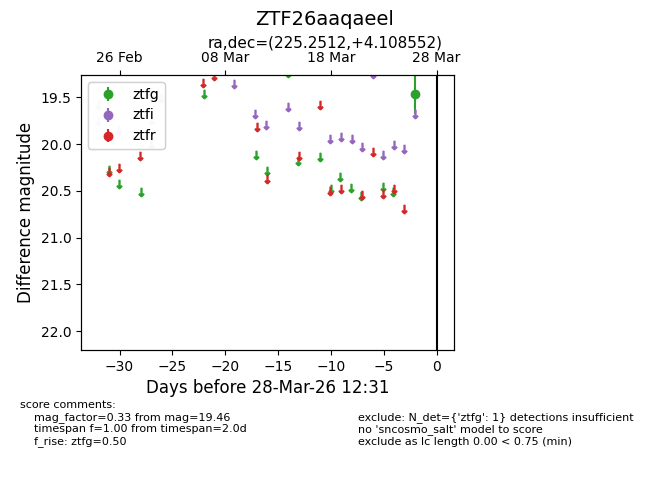
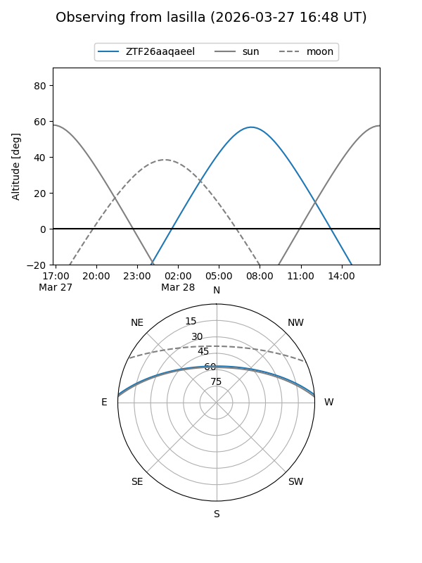
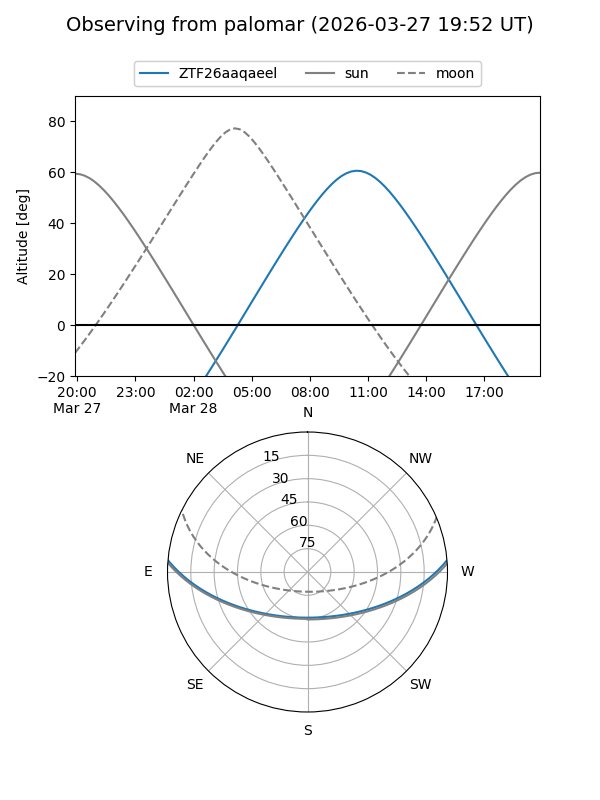

ZTF26aaqaeel
Target ZTF26aaqaeel at 2026-03-28 12:35
Aliases and brokers:
FINK: link
Lasair: link
ALeRCE: link
alt names
ZTF26aaqaeel (ztf,fink_ztf)
Coordinates:
equatorial (ra, dec) = 225.2512,+4.10855
equatorial (HMS+DMS) = 15:01:00.28,+04:06:30.79
galactic (l, b) = (1.9930,+51.46697)
Flags:
Photometry:
last ztfg=19.46
1 ztfg detections
Lightcurve

Visibility


Additional plots